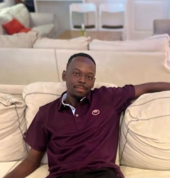
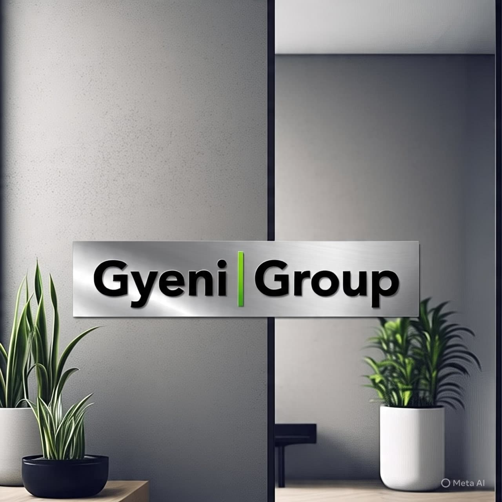

Nana Kwesi Gyeni
About Me
I am a student in WDD 131 learning dynamic web development. I am from Ghana and currently living in Liverpool, England. I am a member of the Presbyterian Church and the Church of Jesus Christ. My hobbies include playing basketball, coaching my church youth football team, playing video games, reading novels, and watching anime. I also enjoy participating in charitable events and spreading the gospel of Jesus Christ.
My Goals
I want to build modern, responsive websites using HTML, CSS, and JavaScript with a strong foundation in design and accessibility. My biggest aim is to start a Software and Tech Company under a corporation or group of my own.